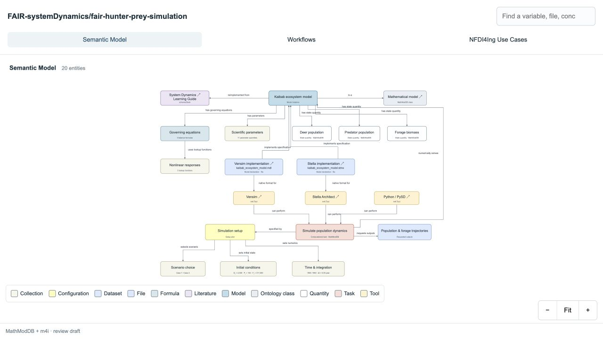
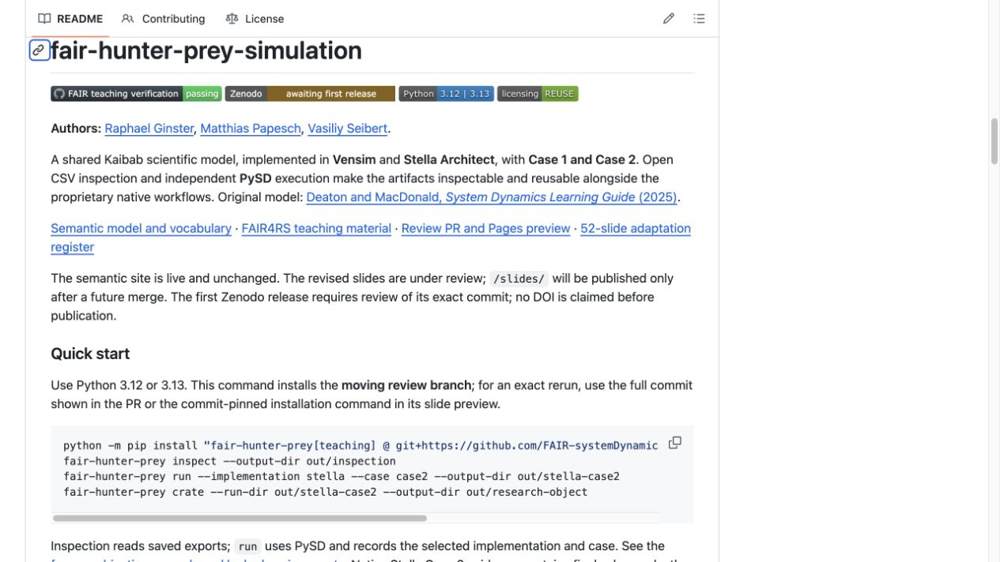
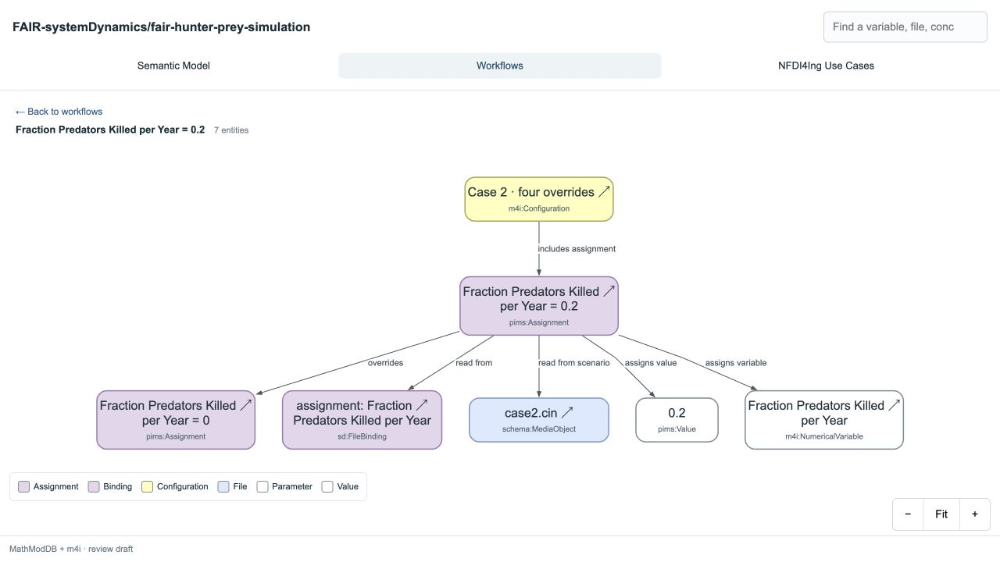
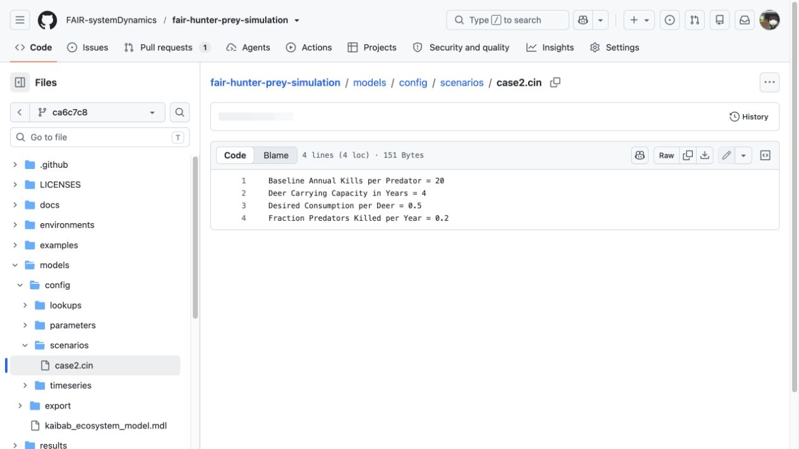
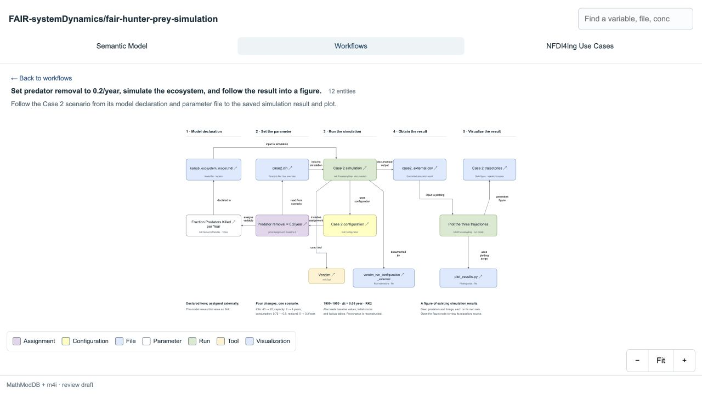
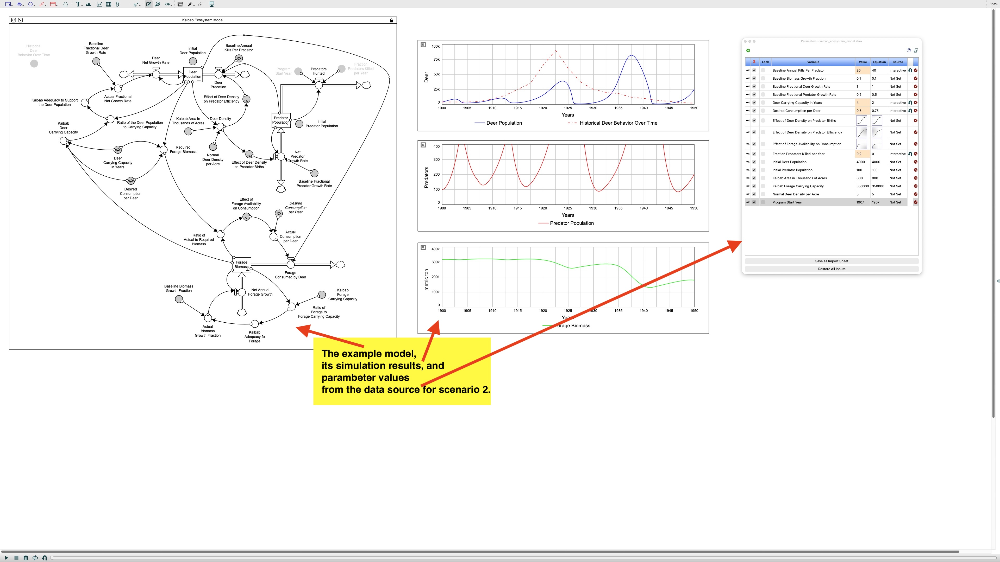
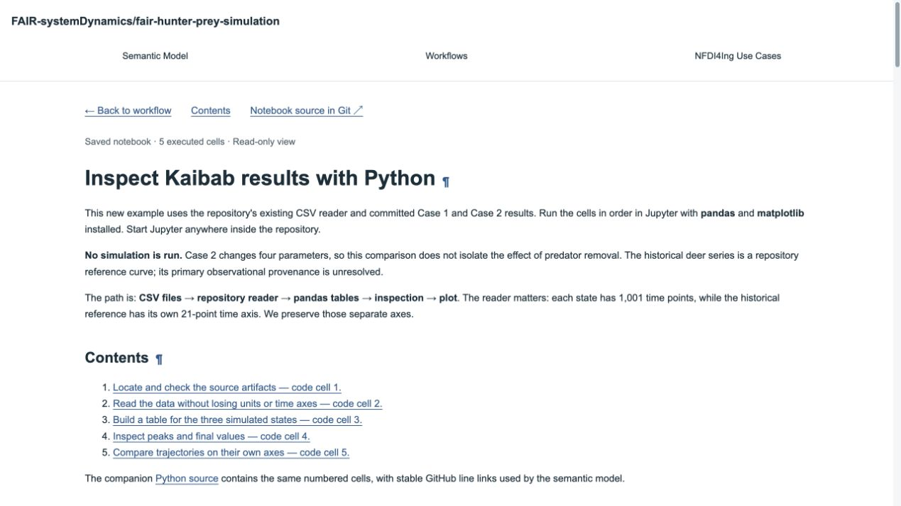

Research data and research software
- Scientific specification
- Vensim / Stella
- Case configuration
- Execution
- Open inspection
- FAIR record
One Kaibab model. Vensim and Stella Architect. Open artifacts for inspection and reuse.
NFDI4Ing RDM Basics · Research Software · Vasiliy Seibert
With implementations by Raphael Ginster, Matthias Papesch and Vasiliy Seibert
Today we follow the software and artifacts that produce the data, including the dependencies needed to interpret and rerun them.
| Minutes | Activity |
|---|---|
| 0–10 | Shared model, two tools, two cases |
| 10–24 | Findable and Accessible |
| 24–34 | Practical 1: discover and inspect metadata |
| 34–47 | Interoperable |
| 47–59 | Practical 2: inspect exports, then execute with PySD |
| 59–73 | Reusable |
| 73–85 | Practical 3: package an actual run |
| 85–90 | Checklist and discussion |
FAIR practices apply to the research artifacts around Vensim and Stella. They do not change the proprietary licenses of the applications.
The literature defines an ecosystem of deer, predators and forage. Equations, lookup functions, units and initial conditions describe the scientific problem.

| Use case | Vensim implementation | Stella Architect implementation |
|---|---|---|
| Define and edit | Equations and sketch in .mdl | Equations and views in .stmx |
| View and document | Native views; exported HTML/SVG | Native views; exported equations, PDF/SVG |
| Configure | External .cin, CSV and workbook | Parameter, lookup and historical CSVs |
| Execute | Native Vensim engine | Native Stella engine |
| Export and share | Source, documentation, result CSV | Source, documentation, result CSV |
| Artifact | What it carries | Access boundary |
|---|---|---|
| .mdl / .stmx | Editable model declarations; .stmx is XML/XMILE | Readable source, tool-specific semantics |
| CSV / HTML / SVG / PDF | Exported values or documentation | Open inspection in appropriate readers |
| .vpmx | Vensim packaged model | Vendor runtime; an export option, absent here |
| ZIP / .stmz | Stella bundled model and supporting files | Container only; an export option, absent here |
| Parameter | Case 1 | Case 2 |
|---|---|---|
| Annual kills per predator | 40 | 20 |
| Carrying-capacity horizon | 2 years | 4 years |
| Desired consumption per deer | 0.75 t/(deer·year) | 0.5 t/(deer·year) |
| Predator removal fraction | 0/year | 0.2/year |
The outcome is not an isolated predator-removal effect.
Vensim: basic_parameters.cin + initial-stock workbook; add case2.cin.
Stella: …parameters_stella_scenario1.csv / …scenario2.csv.
Inspect saved exports
Run an implementation with PySD
Shared scientific specification. Different implementations. Evidence that travels with the research.
Assign persistent identifiers to software. Distinguish components and versions when they represent different research objects.
| Step | Action | This repository |
|---|---|---|
| Prepare | Review authors, licenses and release metadata | Prepared in .zenodo.json |
| Connect | Enable the repository in Zenodo GitHub settings | Not activated |
| Release | Publish an approved GitHub release | Not performed |
| Verify | Check ingestion and record the issued DOIs | Pending |
Concept DOI identifies the project across deposited versions.
Version DOI identifies a particular deposited snapshot.
Before publication, record the full Git revision used for the run. A branch name moves; a commit identifies a specific source state.
model implementation + case + source revision
+ execution environment + generated output hashescff-version: 1.2.0
type: software
version: 0.7.0.dev0
authors:
- family-names: Ginster
given-names: Raphael
- family-names: Papesch
given-names: Matthias
- family-names: Seibert
given-names: Vasiliy"@type": "SoftwareSourceCode",
"name": "fair-hunter-prey-simulation",
"version": "0.7.0.dev0",
"programmingLanguage": "Python",
"runtimePlatform": [
"Python 3.12", "Python 3.13"
]Standard protocols make files retrievable. The next question is whether a reader has the software and permissions needed to use them.
git clone https://github.com/FAIR-systemDynamics/fair-hunter-prey-simulation
python -m pip install \
"fair-hunter-prey[teaching] @ git+https://github.com/FAIR-systemDynamics/fair-hunter-prey-simulation@__REVISION__"The installed package contains both source implementations and their required inputs. It executes them through PySD.
| Use case | Requirement |
|---|---|
| Read equations / metadata | Text or web reader |
| Inspect exported tables / diagrams | CSV reader, browser or Python |
| Edit in a native graphical environment | Appropriate Vensim or Stella application |
| Run a native packaged model | Vensim Model Reader / isee Player; compatible models and terms |
| Run this supported model through Python | PySD plus this repository’s tested adapters |
Metadata should remain accessible even if the software becomes unavailable.
| Service | Role | Evidence needed |
|---|---|---|
| Zenodo | Deposit plus persistent metadata and DOI | Verified concept/version records |
| Software Heritage | Content-addressed source preservation | Verified archived object and SWHID |
| GitHub | Collaboration and current source history | Repository URL and full commit |
For hunter–prey, external deposits and archive ingestion remain unverified. The release checklist records the next steps.
Shared scientific specification. Different implementations. Evidence that travels with the research.
A missing search result is evidence about discovery, not proof that a model is scientifically invalid. Metadata supports indexing; it does not guarantee a search position.
Shared scientific specification. Different implementations. Evidence that travels with the research.
Use domain-relevant formats and preserve what the values mean.
| Export | What the reader must preserve |
|---|---|
| Vensim | Variable units and potentially several time axes |
| Stella trajectory | Horizontal values, time row and time unit |
| Stella final values | No time row; no invented trajectory |
| Stella inputs | Headerless parameters; lookup x/y rows; locale conventions |
The existing readers make these differences explicit before pandas or Matplotlib receives the data.
openapi: 3.1.0
info:
title: Kaibab inspection API
version: 0.1.0
paths:
/results/{implementation}/{case}:
get:
summary: Read saved resultsA future service would specify implementation, case, units, time-axis shape and errors. A final-values export cannot satisfy a promised trajectory response.
The working interfaces here are the Python API, command line and documented CSV readers.
Fraction Predators Killed per Year = 0.2Fraction Predators Killed per Year,0.2One scientific concept: annual predator removal fraction (1/year). Case 1 uses 0; Case 2 uses 0.2.
The execution record hashes the selected configuration and resulting stock data. Stella Case 2’s native evidence remains final values only.
dependencies = [
"pysd==3.14.3",
"pandas>=2.2,<3",
"matplotlib>=3.8,<4",
"openpyxl>=3.1,<4",
]The package contract constrains supported versions. The teaching lock records a complete tested set.
Changing a dependency may break parsing, translation or numerics. A permissive installation is not evidence of equivalent results.
from fair_hunter_prey import run_example
run = run_example(
"stella", "case2", "out/stella-case2"
)
print(run["provenance"])Shared scientific specification. Different implementations. Evidence that travels with the research.
from fair_hunter_prey import inspect_results, run_example
# Saved native exports: no new simulation
saved = inspect_results("out/inspection")
# Independent execution using the preserved adapters
for implementation in ("vensim", "stella"):
for case in ("case1", "case2"):
run_example(implementation, case,
f"out/{implementation}-{case}")Compare each PySD result with its own native reference. The Stella Case 2 reference supports a final-value comparison.
Shared scientific specification. Different implementations. Evidence that travels with the research.
For this model, a reusable result needs its implementation, case, input files, numerical method, environment and execution record.
| Artifact | Question it answers |
|---|---|
| README / teaching guide | How can I install and use it? |
| Model documentation | Which equations, units and assumptions? |
| Semantic site | How do concepts, files and activities connect? |
| Examples / notebooks | Which steps can I reproduce? |
| Changelog / contribution guide | What changed, and how can I contribute? |
| Material | Existing license |
|---|---|
| Original repository code and new adapters | MIT |
| General documentation | CC BY 4.0 |
| Kaibab model and derived material | CC BY-NC-SA 4.0 |
| Vendor applications | Separate proprietary terms |
| Service logos | Retained attribution and service-logo terms |
REUSE maps licenses to paths. An open repository does not make every file public domain or remove model restrictions.
implementation: stella
case: case2
engine: PySD
method: rk2-heun
source_revision: <recorded commit>
inputs: <file hashes>
outputs: <file hashes>
started: <observed UTC timestamp>| Level | What it captures | Limit |
|---|---|---|
| Dependency contract | Supported ranges in pyproject.toml | Not a frozen installation |
| Teaching lock + run record | Exact tested packages; observed Python/platform | Platform-specific packages still matter |
| Container recipe | OS and runtime layers, if actually built and recorded | Does not remove vendor licenses or guarantee future execution |
This example supplies the first two. Containers remain a documented option; no container image is published.
python -m pytest tests -q
python tools/fair/check_stella.py
cffconvert --validate
reuse lint
python -m build| Missing artifact | Consequence |
|---|---|
| Scenario configuration | The case is ambiguous |
| Lookup or initial-stock workbook | The model input is incomplete |
| Numerical method / adapters | A rerun may differ despite matching parameters |
| License and attribution | Reuse conditions and credit are unclear |
| Execution record | A figure cannot be traced to an observed run |
A JSON-LD manifest connects the files and their meaning. Preservation becomes easier when the evidence travels together.
A crate is not a guarantee that every future machine can execute the research.
Shared scientific specification. Different implementations. Evidence that travels with the research.
from fair_hunter_prey import run_example, create_crate
run = run_example("stella", "case2", "out/crate-run")
crate = create_crate("out/crate-run", "out/research-object")
print(crate / "ro-crate-metadata.json")What remains external? The literature, identifier infrastructure and any native vendor runtime. The crate should explain those dependencies rather than hide them.
| Area | Evidence to inspect |
|---|---|
| Findable | Identifiers, versions, metadata, observed indexing |
| Accessible | Retrievable files, documented access, archival status |
| Interoperable | Formats, meanings, bindings, readers and tested translation |
| Reusable | Licenses, provenance, dependencies, tests and documentation |
Use the repository evidence table to distinguish implemented features from publication steps still pending.
| Service | Role |
|---|---|
| Betty Research Engine | Discovery and inspection of indexed metadata |
| Terminology Service / semantic model | Definitions, vocabulary references and file bindings |
| NFDI4Ing Jupyter | Open inspection and independent Python execution |
| RDMO | Software and data management planning |
| Coscine / ing.grid | Related storage and publication services from the lecture series |
Which artifact would a collaborator need first to reuse your model?
Explore the semantic model · Run the examples · Inspect the FAIR evidence
The native tools remain proprietary. The research becomes easier to find, inspect, and reproduce when its artifacts carry their context.





